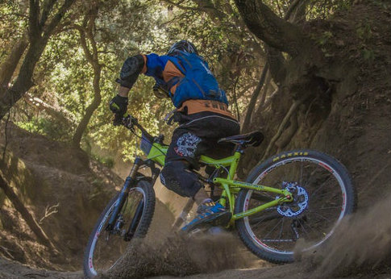
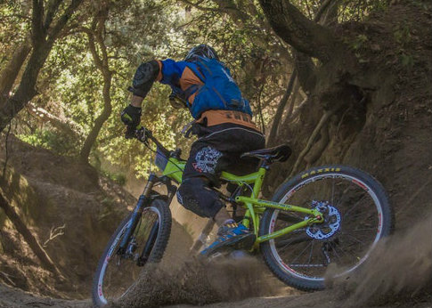

For the courageous, or the timid, our tour guides can help you have the perfect experience suited to your needs. There are at least two guided tours daily. Not only are our guides mountain-bikers themselves, but they are also trained mountain guides as well. Please see our Adventure Tours Page for more details.
Wheels & Deals
Look into our Sales Page to see what products we offer. Also consider having your new or used bike serviced with our wide range of available amenities at our Services Page.
 
